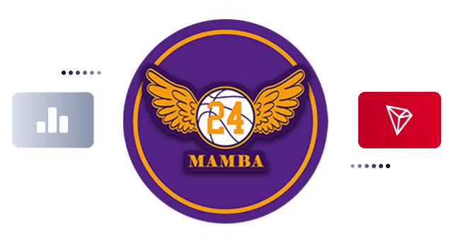

Original intention of BMB
BlackmambaCoin (BMB) was initiated by the Kobe fans group and a anonymous group of the Department of Computing of the University of Pennsylvania, and sponsored by a well-known sports quiz platform. It is a long term innovation focusing on competition and sportsmanship.
ABOUT BlackmambaCoin（BMB）
BMB is a token issued by a community composed of a group of fans without borders at the core of the Mamba spirit. The core values of this community are highly unified.It aims to link a great experiment made by all users and partners of NFT+DAO+ Binance Ecosystem.
In terms of technical characteristics, BMB's extreme deflation, algorithm upgrades, and automatic currency dividends are designed to enable strong consensus holders who hold more coins and buy more coins to share all the high returns of the trading pool. Coin holders do not have to worry about the fairness and security of the platform and user data, privacy, the transparency of platform rules, and the stability and reliability of the system.
The vision of BlackmambaCoin (BMB) is to create a new generation of decentralized community environment, maintain a high degree of autonomy, and help more people who are positive, hardworking, and have sports dreams.
Features of BMB
Extreme deflation
Each transaction of BlackmambaCoin (BMB) will burn 5% of the transaction, 3% of which will be put into the liquidity pool, and 2% will be distributed to all coin holders.
Value is getting higher and higher
With the total amount burned growing over time, the amount of available supply and yield generated decreases as the burn rate increases, forcing currency appreciation and asset-value protection.
Practical ecology
The BMB ecosystem will launch a sports competition online platform, online quiz and e-commerce integration, and part of the revenue generated will support sports charity and youth sports.
Advantages of BMB
PART ONE
Business processing in BlackmambaCoin uses blockchain smart contracts to limit the conditions for value transmission and increase the degree of automation of transactions.
PART TWO
Any institution can use its own network to access the system to achieve point-to-point information transmission between payers and payers.
PART THREE
All nodes in BlackmambaCoin share account books. Point-to-point transactions between nodes are confirmed through a consensus mechanism, and the results are broadcast to all nodes.
RISK CONTROL TECHNOLOGY SYSTEM
Database read and write separation mechanism
The BlackmambaCoin system risk control will maintain only read access to the required customer/account data and transaction data to ensure the safety and reliability of account data.
Compound Event Processing (CEP)
Real-time/quasi-real-time transaction risk control. Compared with the purely rule-based processing model, BlackmambaCoin adopts the compound event processing (CEP) model,which has better performance and scalability.